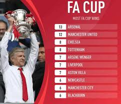

Arsenal FC Achievements
Achievements Overview
Arsenal FC is one of England's most successful football clubs. Below are some of the club's key achievements:
- Premier League Titles: 13
- FA Cups: 14 (Record holders)
- League and FA Cup Double: 3 times
- The Invincibles: Unbeaten Premier League Season (2003-2004)
- UEFA Cup Winners' Cup: 1993-1994
Arsenal's commitment to excellence and beautiful football has made it a beloved club worldwide.
